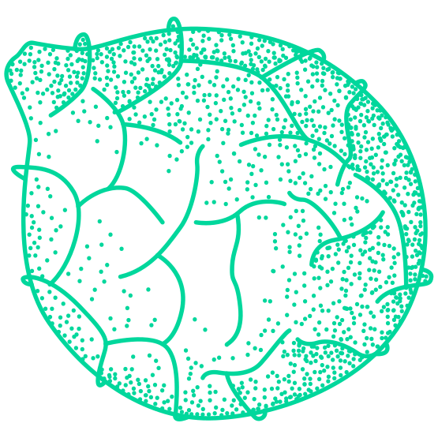
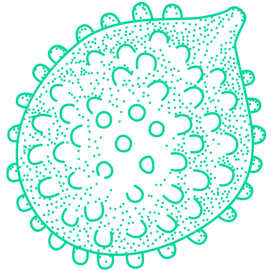
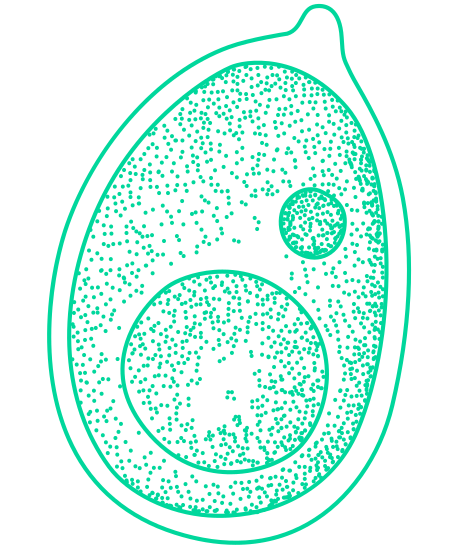
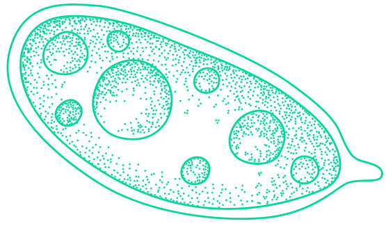
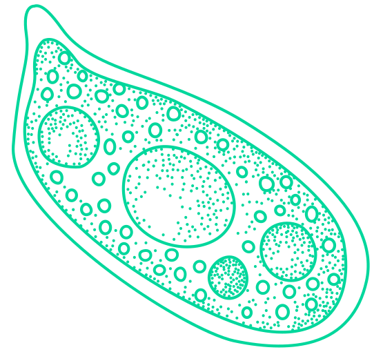
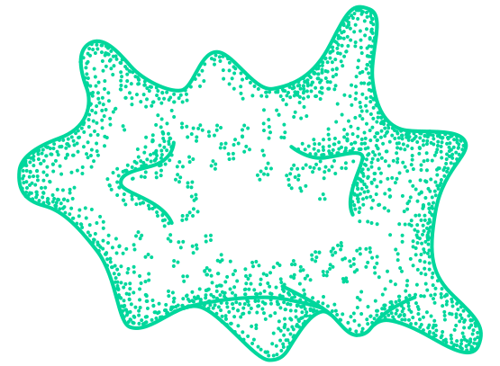
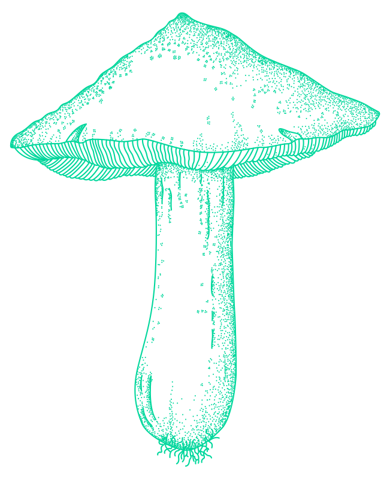
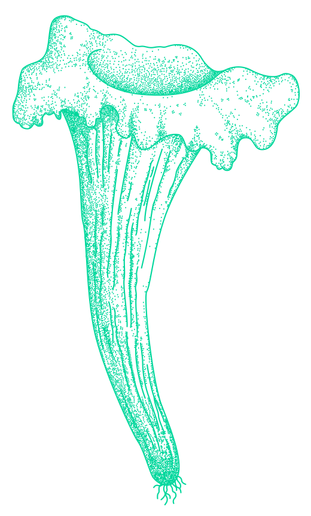
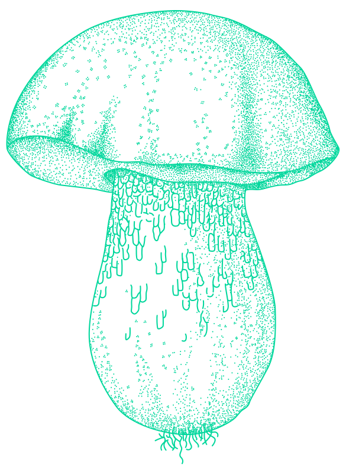

In common parlance the term mushroom is applied to an 'edible fungus' and the term 'toadstool' to an inedible or poisonous fungus. In both cases we are referring to
'macro - fungi', and it should be pointed out that 'micro-fungi' fulfill a function in nature that is even more important in the life of man.
It is to this microscopic universe that belong yeasts and ferments, parasites which ravage crops,
moulds which decay foodstuffs, paper and hide, countless agents of disease but also numerous antibiotics. However, these micro-fungi are not the subject of this book, and the term 'fungi' will be used as a synonym for 'mushrooms and toadstools'.
Such a vast group, containing about 100,000 species, offers so wide variety of structures, that their systematic classification and the determination of their phylogenic or evolutionary history have given rise to many difficulties.
Fungi are traditionally considered as plants, but are really quite distinct: they are therefore known sometimes as the 'Third Kingdom'.
have no chlorophyll, roots, stems or leaves and hardly resemble any true plant.
They also have several features found in the animal kingdom, besides numerous features characteristic of themselves alone.
With the exception of the more primitive forms, which are unicellular, the typical fungi are composed of a more or less compact tangle of fine filaments, which is called a mycelium. These filaments, the hyphae, branch out into the materials from which they derive their nutrition.
The absence of chlorophyll prevents fungi from exploiting directly the carbon contained in the atmosphere, as green plants generally do. In order to live and grow, therefore, the mycelium must procure for itself organic substances produced by other organisms.
One way by which fungi may be classified is their mode of nutrition.
First there are the simple saprophytes, which live on dead or decomposing organic matter such as manure, dry leaves and humus. Parasites, on the other hand, consume living organisms, either animal or vegetable.
Symbionts, at the top of the scale, exist in association with another species, to the advantages of both. Lichen, which is composed of algae and fungi, provides a good example of symbiosis.
Very significant examples of symbiosis can also be found among the macro- fungi. Fungi such as the amanitas, russulas, truffles, cortinarii, tricholomas and above all boleti, depend for their existence upon the presence of a certain kind of tree,
shrub or bush: oaks, poplars and willows for truffles; beach and chestnut, as a rule, for boleti; the Scotch fir for Boletus bovinus, and so on.Such fungi are not true parasites.
In each case the superior plants draws some food from the nutritive-absorptive connection between mycelium and root, a relationships known as mycorrhiza.
The prime function of the carpophore is to provide for the dissemination of the spores.
The spores are microscopic structures produced in vast quantities and in a great
diversity of forms, colours and dimensions according to the different types and species. The superior fungi are divided into two quite distinct classes according to the formation of the spores:
Ascomycetes and Basidiomycetes. With the former, the spores are contained in fours or eights in the cavity of
very elongated cells called asd; the latter are equipped
with completely differe'lt cells, the basidia, which are
tubular and produce their spores outside the cells on two or four small stalks (sterigmata).
The asci, like the basidia, occupy well-defined zones of
the fruiting body, where they are mixed with sterile cells (paraphyses) to form a fertile bed, the hymenium.
In the larger forms of the Ascomycetes, to which, for example, belong pezizas, morels and helvellas, this bed
appears as a microscopic veil usually turned upwards and covering the fruiting body in the form of an open cup or 'mitre'.
Truffles constitute the only exception. In appearance,
these underground fungi imitate tubers: the hymenium
fills the internal part, the gleba, decorating it with
characteristic veins. Among the Basidiomycetes there are two main groups: 'Gasteromycetes' (for example puff-balls) which are fungi whose spore-producing tissue constitutes entirely the
internal part of the fungus; and 'Hymenomycetes', which make up the larger group of the edible fungi, and where
the hymenium is entirely external, adapted to the highest degree of complexity.
The distribution and structure of this hymenium varies from one group of fungi to another. There are two main types: fungi with caps have the hymenium underneath,
distributed on gills (Agaricaceae), in tubes (Boletaceae or Polyporaceae), or on spines (Hydnaceae); whereas in
Clavaria and Morchella, for example, it is exposed on
folds or at the tips of branches.
From the immense variety of forms described, some can be chosen, which, because of their characteristic external structures, illustrate the most common kinds.
For example, in the case of Amanita caesarea, it is
known that during the first stages of its development a white membrane, the volva, protects it like an egg shell. Yet if the young fungus is divided into sections, the adult fungus, already formed, can be seen. This will emerge by tearing the wrapping and leaving a volva at the base of
the foot.
When the fungus is completely developed, the following parts can easily be distinguished: a 'stalk', and generally an enlarged part in the form of an umbrella, the 'cap'.
Below this cap radiate numerous 'gills' covered by the fertile hymenium; the stalk is adorned, just below the
cap, with a small membranous and drooping skirt, the 'ring', which is nothing more than the protective
membrane of the gills. This membrane, which is called a partial veil, detaches itself when the cap opens.

This fungus is representative of one of the most evolved
families and one of those most distinguished by their
structures. The Agaricaceae include both the most tasty and the most dangerous species; for example, the edible
mushroom and the Death Cap, Amanita phalloides.
Related to the Death Cap is the Spring Amanita
(Amanita verna) and A. virosa: they are equally
poisonous. They are both white, but their caps turn
yellow when scarcely at the adult stage.
Another group of amanitas has scales on the cap. These are the remains of the volva, which has broken into
pieces as the cap has developed. It is not difficult to distinguish species of these fungi from the colour of their cap. The cap of the Fly Agaric (Amanita muscaria) is a beautiful golden red. The Panther Cap (A. pantherina) is brown or grey brown, and bristles with pyramidal scales. Like the Fly Agaric, it is very poisonous. A. vaginata,
commonly called 'grisette', is non-poisonous and differs from the others in that it does not have a ring.
Akin to the amanitas is the Lepiota genus, to which
belongs the 'parasol' mushroom (L. procera). Volvaria
species, in which quite a large volva encircles the base of the foot, are members of the same family. These have no ring and, moreover, their gills and spores are pink. On the contrary, the very mobile ring is always present in
Lepiota: they have gills which are sometimes white, and sometimes barely pink, such as those of L. naucina, an
edible species.
It is well to remember that field mushrooms (Agaricus or Psalliota family) also have a ring and no volva. Thanks to this characteristic, and to the fact that their gills, once they have reached maturity, take on a deep red colour,
they can be distinguished from the amanitas like A. verna or A. virosa, which are entirely white or at most have a
slightly mottled stem. Moreover, the field mushrooms can be distinguished from Entoloma sinuatus (poisonous), as the latter has no ring. However, it is still necessary to
make a distinction between different field mushrooms as, for example, a species like Agaricus xanthoderma is not
edible. It may be recognised by its less stocky
appearance and its much more slender stem, and above all by the very clear yellowing of its cap immediately after it is rubbed.
A ring is also evident in Armillaria, a genus that
includes the honey-coloured Armillaria me/lea, which appears in groups, like Hypholoma. The latter, once they are adult, do not show any trace of a ring, nor the original lining of the gills.
Cortinarius species often have the base of their stem
swollen in the form of a bulb or top.
 Moreover, these fungi are recognisable by the colour of their gills (and their spores), a variable bright rusty ochre often verging on deep red. They also have a characteristic 'cortine' (a
silky web) below the cap. Among the Cortinarius species, Cortinarius praestans is edible, and often reaches considerable dimensions. Its
cap is russet brown, but the gills are slightly purplish
blue, and the bulbous stem is mottled and scaly.
In most fungi with gills, however, characteristic parts like the volva, the ring and the cortine are not present when the fungus is young. Nevertheless, it is possible to make distinctions in this vast range of families and
species, according to the different means by which the
gills in the young fungus are protected. In the young
lacteous mushrooms, for example, the edge of the cap is rolled in to protect the gills. Then the cap enlarges, but at the adult stage the edge stills remains slightly involute. The large groups Tricholoma and Clitocybe -many
species of which bear a confusing resemblance to one
another -are without all the characteristics mentioned above.
Among the important Tricholomae is the St
George's Mushroom (Tricholoma georgii). It is a small
spring mushroom with a colour ranging from a whitish shade to a pale ochre; its cap is thick and its gillss very
close. This mushroom is characterised by a strong smell of wheat flour, which not everyone appreciates, although it is certainly edible.
Other tricholomas have this smell of flour, but are less frequently eaten. Tricholoma albobrunnea has a russet
brown cap and lower stem, with a whitish and floury
upper stem.
Tricholoma equestre and T. sulfurum are both yellow, but while the first is edible, the second is not because of its strong smell. T. rutilans is yellow and its cap and stem are heavily speckled with red. It is edible and is gathered in pine woods during the autumn; the flesh is odourless and agreeable to the taste.
The Tricholomae, however, are not without poisonous members. T. tigrinum (or T. pardinum), T. murinaceum and T. virgatum belong to this category, and the first
mentioned is without any doubt the most dangerous of the whole group. It can be identified by its convex cap, which is crowned with a nipple and decorated with small grey-brown scales, and by its greyish-white gills.
However, it can be confused with T. terreum which is edible. The latter is smaller, its stem is fragile, cylindrical and stuffed with pith, and its cap is garnished with small, extremely fine, fibrous scale.
The possibility of confusion between the field mushrooms and Entoloma sinuatus has already been mentioned, and it has been pointed out that the latter is distinguished by its lack of a ring. This Entoloma, like the other species of the same genus, has gills of a more or less intense pink, never deep red like the field mushrooms. The skin is brittle, thin at the edges and smells of flour. It is poisonous, unlike the other species of this family such as E. clypeatus, a slender mushroom which often grows in clusters and is a symbiont with cultivated plants (pear or apple trees). Moreover, other members of this family are suspect, for example E. nidorosus. Consequently, great care and attention must be exercised to avoid dangerous mistakes that can be made even by those who have some knowledge of fungi.
Rhodopaxillus is so closely linked with the Tricholomae that one of its species, Rhodopaxillus nudus, has Tricholoma nudum as an alternative name. It is a beautiful fungus of an unusually bright violet colour; in the adult stage the cap turns ochre, whereas the gills keep their purplish-blue tones. Despite this strange colouring, this Rhodopaxillus is edible.
The rhodopaxilli are not the only wood mushrooms to have fantastic colours. Cortinarius violaceus is a beautiful species recognisable by its deep violet colour, even brighter than that of Rhodopaxillus; however, when
the spores reach maturity, the gills take on an orangy-rust tinge.
Among the more unlikely fungi colours is the bluish green of
Clitocybe odora, a very edible mushroom which
emits an agreeable smell of aniseed.
All the fungi described above show the characteristic
of a convex cap crowned with a very obvious nipple.
Many fungi have a cap which is flat or concave, sometimes even having the shape of a funnel. The three main types, Paxillus, Russula and Lactarius all grow in woods.
The Paxillus genus, found mainly in poplar groves, is represented by Paxillus involutus, so named because the cap rolls over the gills-a feature already noted. This fungus is also called 'brown chanterelle' because of its chestnut-brown colour, which becomes deeper and more livid when touched. In fact, its form is akin to that of the real chanterelle, Cantharellus cibarius, which is golden in colour and fairly common.
The genus Russula has always been difficult to classify systematically because of the great variety of species. These fungi, which can reach considerable proportions, are characterised by a convex cap, which with maturity becomes concave or funnel-shaped. The stem is rather short and the colours vary widely, not only within the genus but also within the species themselves. Russula cyanoxantha, for example, can have a
deep violet or purple cap, and also a deep green one. However, once they have reached the adult stage, both types become dull, especially if they have been subjected to rain.
Their gills and stems are invariably white. R. virescens (verdigris), which is very edible, is stockier than R. cyanoxantha, and has a cap which is dry in appearance. It is pale ochre in colour. However, the most common characteristic of the russulas is a red cap, and the species so marked are numerous: perhaps as many as a hundred. The distinction between such species is not easy, except where secondary features intervene. The gills may vary in colour from white to a more or less constant yellow; the delicately shaded stem is sometimes pink, sometimes violet; the surfaces of the spores - seen in a microscope - seem to bristle with long spines, either reticulated, finely sculptured or streaked. Among the russulas, Russula emetica must be noted because it is poisonous, and must not be confused with R. lepida, which is edible, or with other species such as R.fragilis. Generally, R.fragilis can be distinguished from R. emetica by its larger si!Ze and by the jagged edge of the gills. The very distinctive and numerous Lactarius family is characterised by the milk which flows from their skin when it is broken.
 
Lactarius deliciosus is a rather stocky fungus with a cap that is funnel-shaped when completely
developed; this cap is marked with reddish concentric
circles on an orangy-ochre background, and its gills,
when touched, show pale green traces.
Its uniqueness stems from the fact that an orangy-red milk flows as soon as the skin is broken.
A white milk is the universal characteristic of the white
lactarii, such as Lactarius piperatus.
This fungus is of considerable size and is further distinguished by its very
close gills. The less dense gills observed in L. vellereus
(which has a slightly velvety cap) are pink in L.
controversus and ochre in L. scrobiculatus; the latter is characterised by the hollows which decorate its stem and
by its white milk, which becomes yellowish on contact
with the air. L. chrysorhoeus is small in size, pale pink in colour and has a speckled cap; its colourless milk becomes
sulphur yellow when exposed to air. L. torminosus, nicknamed the Woolly Milk Cap, is often confused with L. deliciosus, but it can be distinguished by its white milk
and the felt-like appearance of the cap veil.
Until now we have been speaking of 'fungi with gills',
and as we have chosen the genus Amanita to describe the Agaricaceae in general, we shall choose the genus Boletus for the fungi whose fleshy and solid cap has underneath it
a spongy mass of tubes which open to the atmosphere.
Boleti occur in an extremely wide variety of forms within a large range of species. Some are stocky, others slender; some always have a white, others a yellow skin, while some have a white skin which becomes blue green when broken. The latter belong to the fungi which change
colour, which include the Satanic Boletus (Boletus satanas), the Lurid Boletus (B. luridus), the one with a
beautiful stem (B. calopus), and many more. The Satanic Boletus is so named because it is poisonous,
while the Lurid Boletus, frequently considered edible, has been said to produce unpleasant symptoms.
In the absence of more precise mycological knowledge, it is advisable to avoid boleti if the flesh changes colour when broken. The two rough-stemmed boleti are
exceptions to this rule: the first, (Boletus scaber), has a
brown-grey cap and the other (B. rufus) is more stocky and has a brick-red cap. These two fungi, which are
absolutely harmless, have a stem with white flesh which, when cut, becomes greyish or blue or even purplish blue at the base; the entire flesh of these fungi becomes blackish when cooked.
In the majority of boleti the colour of the pores and of the hairs which decorate the stem makes it relatively simple to distinguish the edible from the inedible. They are red in the Satanic Boletus and in the Lurid Boletus, whereas they are white or pale yellow in the edible fungi (the pores can even become yellow, verging on green). Three species come under the heading of edible fungi:
the Cep (Boletus edulis) with an ochre-chestnut cap, B. aerus with a blackish-brown cap, and finally B. pinicola, which has a beautiful copper-red cap. All three make
excellent eating, either fresh or dried.
At one time the family Polyporaceae, characterised by the presence of pores underneath the cap, was frequently
confused with the boleti. The real polypori, however, do not have a central stem, as do the boleti. In fact, many polypori are sessile, that is to say their cap - if it is still appropriate to refer to it as a cap - is flush with the bark of the tree trunks on which they grow.
Some of these fungi appear in the shape of a bracket, a tongue or even a clog; many are edible when they are young, but the majority of the species, because of their leathery, corky or woody consistency, are absolutely uneatable.
Perhaps the most prominent of the edible polypori is
the Beef-Steak Fungus (Fistulina heptica), which can reach a considerable size (four to twelve inches in diameter). It
is a beautiful blood red in colour, with a sticky surface and pink-veined skin; the pores, which are on the lower part, are pale ochre, but become covered with red-brown specks after being touched.
Polyporus pes-caprae has a very short stem and caps
that fan outwards. These caps are thick and have a white
skin, and their slightly scaly surface is velvety and coffee. coloured.
The pores are yellowish white. It is an excellent
autumn mushroom, characteristic of moorlands.
The caps of the Dryad's Saddle (Polyporus or
Poliporellus squamosus) can reach 20·cm (8 in)
in diameter.
They are light in colour, and a few large
brown scales cover the upper part; it makes good
eating only when it is young, and its firm flesh smells of
acid flour.
P. frondosus, which grows near stumps of underwood,
has a characteristic scent and cluster. Its small, thin, fanned-out caps, which are often lobed or split, are brown grey in colour. This species is edible, and is found in summer in damp woods.
This survey of fungi is necessarily limited, but it must include those found most commonly in the woods in autumn.
The Hedgehog Fungus (Hydnum repandum), although tasty, is a little indigestible. It is distinguishable by the presence of many close-set prickles under the cap. The species of Clavaria are less advisable because of the bitter and resinous substances they contain, which can upset the digestive system.
There are various forms of Clavariae, from Clavaria pistillaris, a fleshy mass, thick at the top, to the strangest looking clusters or corollae, sometimes yellow ( C. aurea, C. flava), sometimes pink ( C. botrytis). The latter species
is the only one which can be considered at all edible. Puff-balls (species of Lycoperdon), are usually rounded, white or brownish, and found in meadows and mountain pastures. These fungi are little appreciated, but they are, in the majority of cases, non-poisonous. They are eaten when young, as their fructiferous body,
on ripening, is reduced to a powdery mass of spores.
When puff-balls burst, these millions of brown or black spores can cause respiratory irritation. Phallus species and Clathrus cancellatus are strange phenomena in the world of fungi. Both are characterised by a strong smell: the fetid smell of tainted meat. They both grow on manure-heaps, which are rich in organic substances. Phallus impudicus is reminiscent of the morel because of its conical cap from which flows a thick, greenish, putrid-smelling liquid containing the spores. Clathrus cancellatus, once it is completely developed, has a large, red, reticulated body. In the cavity of this body the spore-containing liquid flows between the speckles: this liquid is called gleba. Both of these, as well as the puff-balls, belong to the Gasteromycetes. Furthermore, they both develop from a sort of egg, leaving an irregularly tom volva at the base. Morels, which have been mentioned above, belong to the Ascomycetes, unlike all the other fungi mentioned. They belong to the genus Morchella, and are spring fungi which grow in clayey or,.less often, in chalky woods. Their cap, which can be rounded or conical (mitre), ochre, yellow, grey or brown, is always pitted with small cavities. It is safe to say that all the morels are edible, and neighbouring genera like Mitraphora and Verpa are edible as well, although they are less appreciated. The inedible Gyomitra (for example G. esculenta) are not true morels. It is appropriate to end a discussion on fungi types with truffles, those delicious underground fungi of the genus Tuber. Truffles are also Ascomycetes, and are extracted from the ground of oak and other plantations. Although they are difficult to find, truffles are one of the most sought-after of foodstuffs. There is a large number of species, but few are really good, and only two outstanding: the white truffle (Tuber magnatum) and the black truffle (T. melanosporum). A cut shows that the flesh is light grey in the first, and black brown in the second; in both cases this flesh is covered with a network of lighter veins, and this tangle contains the numerous round, verrucous and reticulated asci which in tum contain the large spores.
Anyone who intends to progress, from observing and studying fungi to eating them, clearly must have an exact knowledge of the species encountered. It is just as
obvious that the simplest method of determining whether a fungus is edible or poisonous - namely by sampling it -is totally impractical. Indeed, many traditional methods for testing fungi are unreliable, and should be noted.
The test of the bread-crumb, of the clove of garlic, of the coin or the small silver spoon are utterly worthless. Likewise, feeding doubtful specimens to a dog or cat is not only cruel, but often useless: the reaction may be different, or simply slower with these animals.
Further, it is dangerous to believe that fungi which have been nibbled by slugs or larvae are not poisonous. On the contrary, they can be very dangerous indeed. Not only the Fly Agaric, but also the terrible Death Cap, can often be found nibbled by fungi-eating creatures.
On the other hand, it is quite wrong to decide that fungi are poisonous on the sole grounds that they are close to an animal corpse, in the vicinity of a certain tree and so forth. Fungi simply are, or are not, poisonous,
and this depends entirely on the species. Sometimes it may be that their toxicity is more accentuated in certain areas, but these variations are so exceptional and so slight that they should be ignored.
All species of poisonous fungi have their own particular poisons, but this account is limited to Amanita and Phallus toxins.
There is a distinction made between 'real' poisonous fungi and those which have become poisonous as a result of damage or deterioration. Frost, for example, can make the most edible fungi dangerous. And ptomaine poisons - similar to those produced by the putrefaction of food in general - will occur in over-ripe fungi.
The most serious of all fungus poisoning is, without any doubt, that caused by Amanita phalloides, which in the majority of supervised cases proves fatal. This high mortality rate is due in part to the fact that the symptoms of poisoning do not appear until 12 to 48 hours after ingestion. By that time, the poison has reached the organs which are particularly vulnerable,
namely the liver, heart, lungs and kidneys. The extent of the damage naturally depends upon the quantity of fungi ingested, but it also depends upon individual resistance.
When they do appear, the symptoms are alarming: violent abdominal pains, vomiting and a fetid diarrhea. This is followed by a period of calm, but it is only a false improvement, and is in turn followed by a repeated spell of the first symptoms, usually less intense. At the same time the patient suffers a collapse, during which his pulse weakens as it accelerates; his sight troubles him, but he never loses consciousness. Following the serious degeneration suffered by the liver and the red blood corpuscles, the condition inevitably becomes worse. In most cases the state of the patient becomes more and more critical, ending with death.
Other fungus poisonings are usually less serious. In the main, the toxin attacks the alimentary canal, resulting in vomiting, diarrhea and almost immediate visceral pains. Perspiration, headaches, tremblings and a feeling of exhaustion are often simultaneous symptoms. Finally, many fungi are only mildly toxic, and their effect is limited to the peculiar phenomena of ebriety and hallucination.
It has already been mentioned that meadows and woods are the natural habitat of most species of fungi. Those which grow in woods are linked by symbiosis with a particular species of tree. Thus, each type of woodland has its complement of fungi.
Three kinds of wood: coniferous; beech; or woods composed of oaks, elms, hazels, chestnuts and maples are the most favourable for mycologists.
When a species of conifer such as the Scotch fir, Picea or larch forms a cool and rich forest with a mossy undergrowth, it is accompanied by characteristic fungi. In larch woods, we find certain boleti including Boletus elegans, to which we can add B. cavipes; the latter is not highly rated because of the spongy mass of its pores.
In pine woods, Boletus luteus is found, and also B. granulatus, which has the upper part of its stem slightly granular. These boleti, like those to be found in larch woods, have a sticky cap. It is recommended that one remove the film which covers them, as this sticky skin is absolutely indigestible.
The red fir wood is amongst the richest in fungi. The boleti we have been speaking of are to be found there, especially when there are larches and pines, which is often the case.
Boleti, lactarii and russulas are all found there. So is the plentiful chanterelle ( Cantharellus cibarius), which makes an excellent condiment.
Obviously these woods also contain some poisonous species: the amanitas, especially if there are the necessary symbiotic plants. A few birch trees are sufficient for the Fly Agaric to decorate the woods plentifully with its red caps speckled with white. It is generally sufficient for a large beech, a poplar,
a hazel or a chestnut to be hidden behind the dark foliage of the firs and the pine trees, for the panoply of fungi to offer an unforeseen variety of forms and colours.
Beech woods often shelter those dark-capped boleti which are safest for the novice. The woods we have spoken about also shelter tricholomas and amanitas, lepiotas and species of Clitocybe, which must be used with great caution.
The fungi living in the mixed woods are varied. The clavarias are very numerous; the Fairy Ring Champignon (Marasmius oreades) may be very common, together with the russulas, clavarias and, on the chestnuts, the polypores including
the glowing Beef-Steak Fungus. Certain fungi prefer the less humid, warmer and drier atmosphere of the oak woods: this is the case with the edible Orange-milk Agaric. In other woods, near each group of trees grow a variety of characteristic species.
Many fungi are also found in fields, where they live off dead matter such as manure. Fungi found here include the field mushrooms and the coprini. The lepiotas are also found in great numbers here (Lepiota excoriata, L. naucina) and, under very damp conditions,
numerous small water fungi also grow, but these are unsuitable for cultivation.